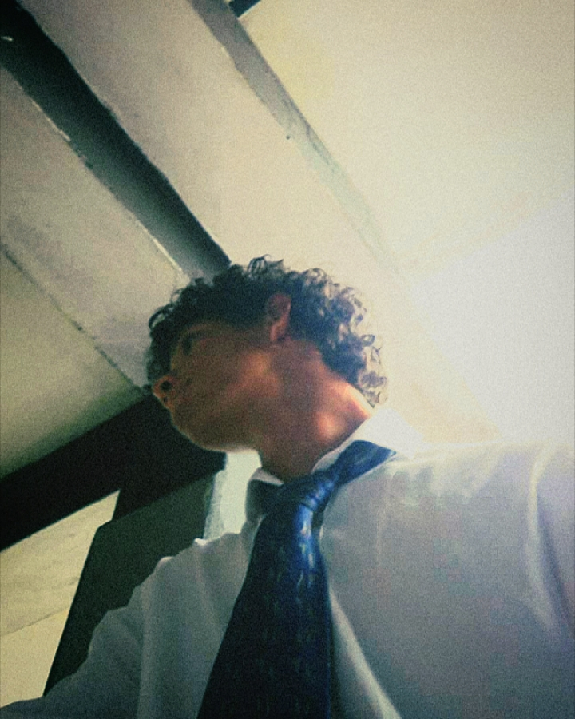

Soy Anderson Díaz Jacobo, músico apasionado por la guitarra y la creación musical. Mi viaje comenzó con la guitarra, y desde entonces he explorado diversos instrumentos y géneros, especializándome en armonía modal y tonal.
Actualmente toco la guitarra eléctrica en una banda, y también toco el bajo. Me encanta analizar la música, entender su estructura y aplicar ese conocimiento para crear composiciones originales. Estoy abierto a colaborar en bandas sonoras, grabaciones o proyectos musicales.
Mi trayectoria musical
Creación de temas originales, bandas sonoras y colaboraciones con otros artistas. Grabación y producción musical.
Toqué en una banda como guitarrista eléctrico, ganando experiencia en presentaciones en vivo, arreglos musicales y trabajo en equipo. También aprendí bajo eléctrico.
Aprendí las bases de la armonía musical con mi primer instrumento, la guitarra, sentando los cimientos de mi carrera musical.
Mi música y creaciones
Composición original con guitarra eléctrica, explorando armonía modal y progresiones complejas.
Participación como guitarrista en proyectos de otros artistas, aportando arreglos y grabaciones.
Composición de bandas sonoras para proyectos audiovisuales, combinando texturas y atmósferas.
Instrumentos y conocimientos musicales
¿Quieres colaborar? Hablemos